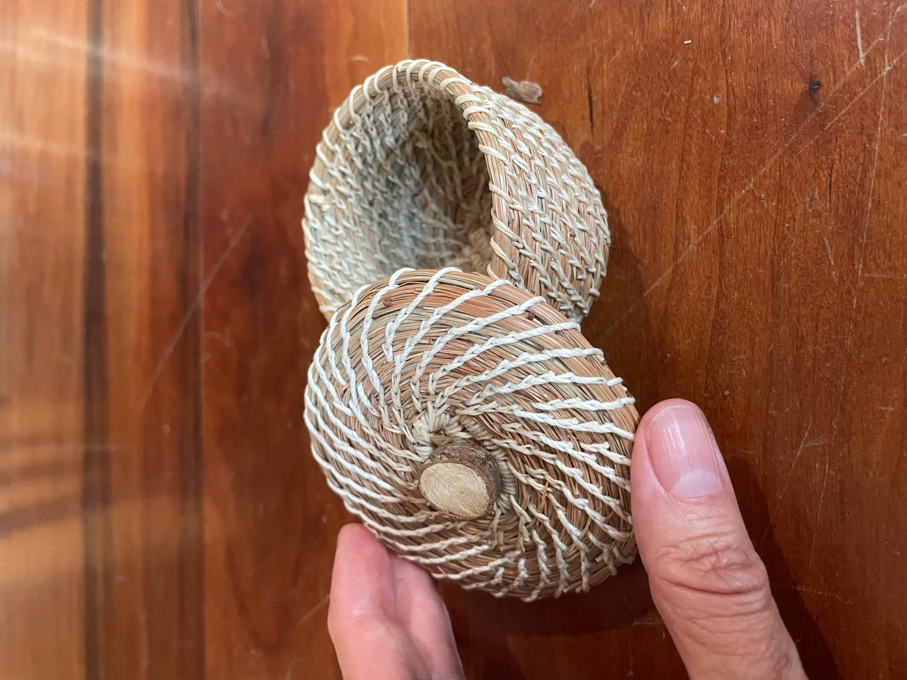

Contribute to the Coe College Tree Archive
There are many ways for students, staff, and faculty to get involved and contribute to the Coe College Tree Archive. This page provides
Creative Additions to the Archive
Interested in using your creativity to add to the Coe College Tree Archive? The project is looking for submissions of creative works inspired by the trees at Coe College. Although quantitative data on the College’s trees is certainly valuable, these numerical measurements and estimates do little to speak to our personal connections to the trees around us. Potential submissions might look like:
- A short story or poem related to a tree on campus
- A memorable photograph that includes one of Coe’s trees
- A painting or drawing of trees on campus
Whatever you want to submit, we will preserve its record alongside the other records in the archive. Your contribution will directly help to broaden the Coe community’s record of our trees. You can submit at the link below or by emailing coe.tree.archive@gmail.com.

Maintain the Archive Website
Coe students with an interest in environmental data science and related disciplines are especially encouraged to inquire about opportunities to maintain, expand, or even recreate the Coe College Tree Archive.
Detailed instructions for maintaining the website are available on the project’s GitHub repository here. The website is built using Quarto, a markdown language created by Posit (formerly R Studio). The programs used to clean and transform the data are written in the R programming language. Anyone can download or clone the GitHub repository, modify the website’s code, and render a new version of the website on their local machine.
If you are interested in helping to maintain the archive website, please send a brief email indicating your interest to the current site maintainer at coe.tree.archive@gmail.com. From there you will be given contributor access to the GitHub account so you can modify the website’s code and then push those changes to the public website.